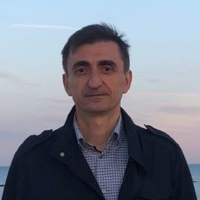
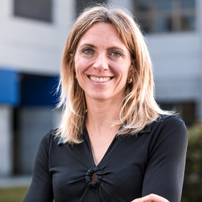
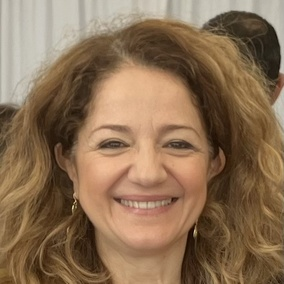
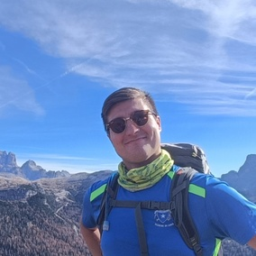

Officers
Enrico Fabrizi (2026-2027) - Coordinator

Enrico Fabrizi is Full Professor in Business and Economics Statistics at the Piacenza campus of the Università Cattolica del S. Cuore (UCSC). His research interests are survey sampling methodology, Bayesian inference applied to the analysis of complex survey data and small area estimation. Lately, Enrico devoted special attention to estimation of poverty and inequality related parameters.
Annamaria Bianchi (2026-2027) - Deputy-coordinator

Annamaria Bianchi is Associate Professor in Economic Statistics at the University of Bergamo. She completed her double PhD in Mathematics and Statistics for Computational Sciences at the University of Milan and in Sciences Mathématiques at the University Paris 6 in 2007. She is a survey statistician with interests in non-probabilistic methods for data collection and inference, the use of digital trace data to enhance survey research, adaptive survey designs, representativity indicators, and online panels and web surveys. From 2023 till 2025 she has been member of the Executive Committee of the International Association of Survey Statisticians (IASS) of the International Statistical Institute (ISI) and since 2024 she is Elected Member of the ISI. Since 2024 she is member of the Board of the European Master in Official Statistics (EMOS).
Claudia De Vitiis (2026-2027)

Claudia De Vitiis is a Research Manager at the Italian National Institute of Statistics, where she leads the Unit “Methodologies for designing sample strategies for social surveys.” She is currently responsible for the study and development of complex sample designs and strategies for social surveys integrating register and survey data. In recent years, her research has focused on smart surveys and mode effects.
Aldo Gardini (2026-2027)

Aldo Gardini is a tenure-track researcher in Statistics at the University of Bologna. His main research interests include the study and development of Bayesian hierarchical models, with particular attention to their application to survey data through the small area estimation framework. In this field, his recent work focuses on models that integrate multiple information sources, such as remote sensing data, and on mixture models.
Emilia Rocco (2026-2027)
Emilia Rocco is Associate Professor in Statistics at the University of Florence. Her main research interests focus on sampling methodologies and statistical inference from both probability and non-probability samples. Additional interests include regression models for skewed variables, geo-referenced data analysis, and the construction of composite indices, combining methodological and applied perspectives.